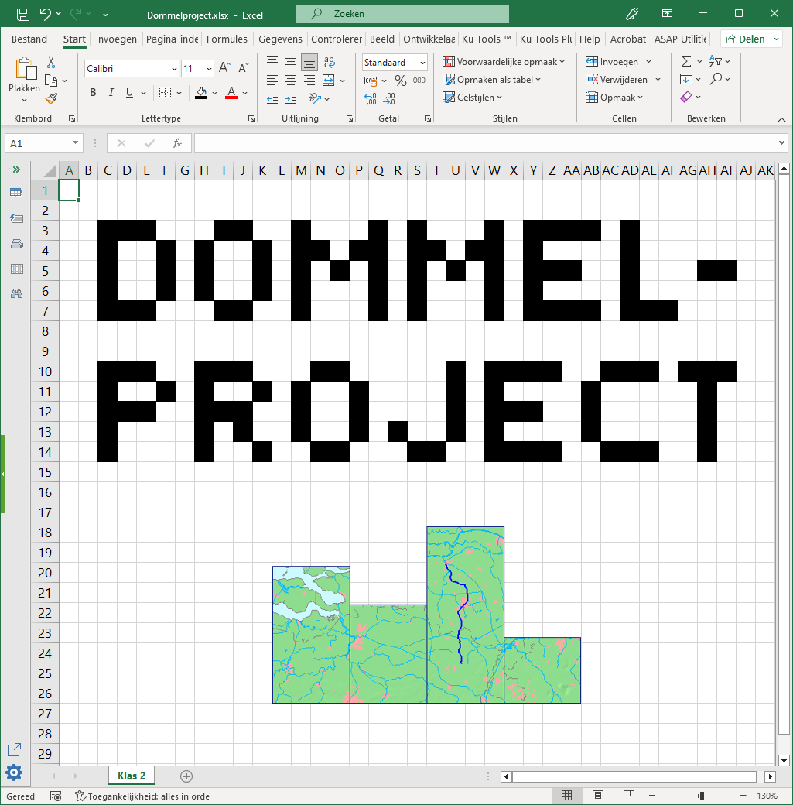

Werken met Excel#

Bij het onderdeel wiskunde van het Dommelproject ga je aan de slag met Excel. Eerst leer je met behulp van vier oefenopdrachten de basis van Excel kennen. Daarna maak je een eindopdracht waarin je het geleerde toepast. Aan de oefenopdrachten werk je individueel; de eindopdracht maak je samen met je groepje.
De resultaten van de eindopdracht dienen te worden verwerkt in de Dommelprojectposter van je groepje.
Begin nu met het onderdeel Voorbereidingen.